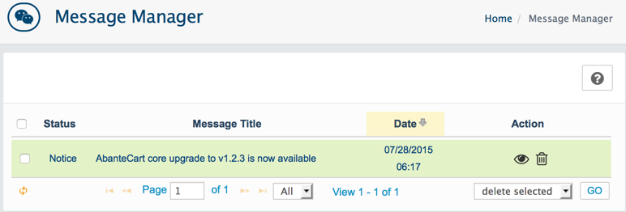
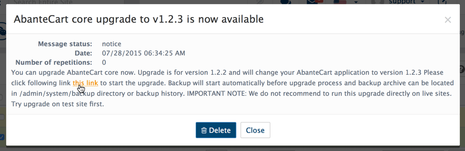
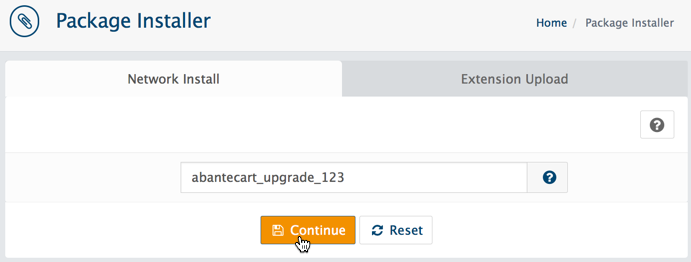
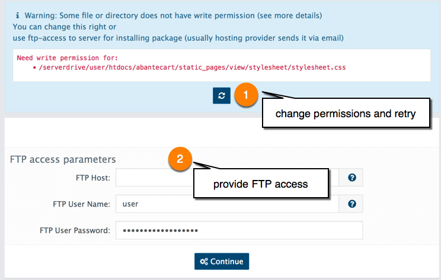

-
*
Warning: Some file or directory does not have write permission.
You change file permissions right but Warning: Some file or directory does not have write permission appear again
Solution: Change write permissions for directory where file is located.

-
2
Follow the link
In notification message click on upgrade link.

You can also use key abantecart_upgrade_123 (abantecart_upgrade_version) to submit to extension install section.

This will install and run upgrade process and it will automatically backup your AbanteCart before updates.
-
3
Fix file permissions
If you have files or directories that do not have write permissions, you will be asked to do upgrade using FTP. You can change permissions on required files to be writable (777) or just make all files and directories writable for upgrade process. This can be and recommended changed back after upgrade. If you encounter issues or do not feel comfortable with permissions, do manual upgrade in next step instead.
